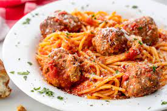

Spaghetti and MeatBalls

Description
This is my go-to recipe for spaghetti and meatballs. Not only is it weeknight friendly – you can have it on the
table in 45 minutes – but it is also picky eater-approved. The meatballs are tender but not falling apart, and
they are also packed with flavor, thanks to the “meatloaf mix,” a combination of beef, pork, and veal, as well
as the addition of fresh garlic and herbs, seasoned breadcrumbs, and grated Parmigiano Reggiano cheese. Because
the recipe makes a fair amount of meatballs, I find it easier to brown them on a sheet pan in the oven rather
than pan-fry them on the stovetop (less stovetop splatters to clean up, too!). To cut down cooking time, I cheat
and use a good quality store-bought marinara sauce, but if you have homemade tomato sauce stashed in your
fridge, by all means, use it.
Ingredients:
- 1 large egg
- 3 tablespoons finely chopped fresh basil (plus more for serving)
- 3 tablespoons finely chopped fresh parsley
- 1 teaspoon dried oregano
- ¾ teaspoon salt
- ¼ teaspoon freshly ground black pepper
- 2 cloves garlic, minced
- ¼ cup water
- 1½ pounds ground "meatloaf mix" (approximately equal parts ground beef, pork and veal)
- ¾ cup dried Italian style bread crumbs (such as Progresso)
- ½ cup freshly grated Parmigiano-Reggiano cheese (plus more for serving)
- Large jar (32 oz) good quality Marinara sauce (such as Rao's)
- 1 pound spaghetti
Directions
- Preheat oven to 425 degrees F.
- Place a large pot of water on to boil for spaghetti. When it boils, add salt and pasta and cook to al dente.
- Mix beef and Worcestershire, egg, bread crumbs, cheese, garlic, salt and pepper. Roll meat into 1 1/2 inch
medium-sized meatballs and place on nonstick cookie sheet or a cookie sheet greased with extra-virgin olive
oil. Bake balls 10 to 12 minutes, until no longer pink.
- Heat a deep skillet or medium pot over moderate heat. Add oil, crushed pepper, garlic and finely chopped
onion. Saute 5 to 7 minutes, until onion bits are soft. Add beef stock, crushed tomatoes, and herbs. Bring
to a simmer and cook for about 10 minutes.
- oss hot, drained pasta with a few ladles of the sauce and grated cheese. Turn meatballs in remaining sauce.
Place pasta on dinner plates and top with meatballs and sauce and extra grated cheese. Serve with bread or
garlic bread (and some good chianti!)